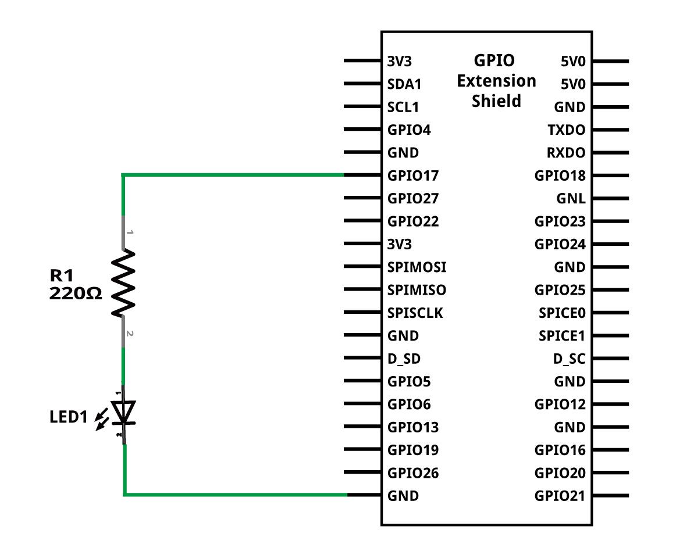
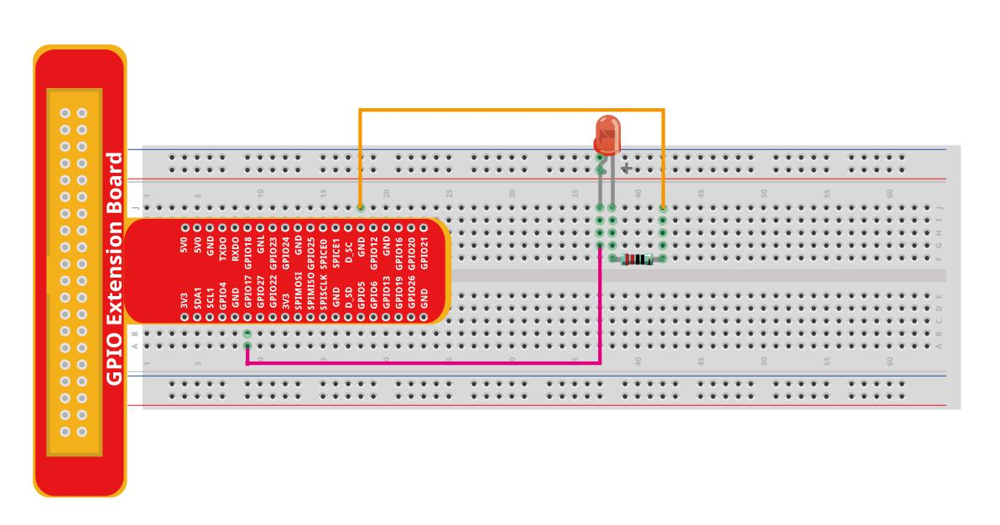

Глава 1: Начало работы
Отлично! Мы начинаем Главу 1 нашего справочника по GUI для Raspberry Pi Zero 2 W. Эта глава посвящена началу работы и включает в себя пример кода для управления светодиодом с помощью графического интерфейса GTK.
—
Введение
В этой главе мы создадим простейший графический интерфейс (GUI) на Raspberry Pi Zero 2 W с использованием:
Библиотеки GTK — для построения самого графического интерфейса.
Библиотеки libgpiod — для взаимодействия с контактами GPIO (General Purpose Input/Output) вашего Raspberry Pi.
В результате мы получим окно с кнопкой, которая будет включать и выключать светодиод, подключенный к пину GPIO17 (это пин 11 на физической раскладке контактов Raspberry Pi).
—
Схема подключения
Для работы примера вам потребуется подключить светодиод к Raspberry Pi. Ниже представлена схема, которая покажет, как это сделать:
{kind=link}
—
Пример кода: Управление светодиодом
Этот C-код создает простое GTK-окно с кнопкой для управления светодиодом через GPIO.
#include <gtk/gtk.h> // Основная библиотека для создания GUI-приложений на GTK
#include <gpiod.h> // Библиотека для работы с GPIO на Linux-системах
#include <stdio.h> // Стандартная библиотека ввода/вывода для функций вроде perror
// Определяем константы для удобства
#define CONSUMER "GUI_for_Zero2W" // Имя, под которым ваше приложение будет "запрашивать" линию GPIO
#define CHIPNAME "gpiochip0" // Имя GPIO-контроллера на Raspberry Pi (обычно 'gpiochip0')
#define LED_LINE 17 // Номер GPIO-пина, к которому подключен светодиод (GPIO17)
// Структура для хранения всех необходимых виджетов и данных
// Передаем указатель на эту структуру в колбэк-функцию, чтобы иметь доступ к данным
struct app_widgets {
GtkWidget *button; // Указатель на объект кнопки GTK
struct gpiod_line *line; // Указатель на объект конкретной линии GPIO
int led_on; // Переменная для отслеживания текущего состояния светодиода (0 - выключен, 1 - включен)
};
// Функция, которая будет вызываться при нажатии на кнопку
static void toggle_led(GtkButton *button, gpointer user_data) {
// Приводим обобщенный указатель user_data к нашему типу struct app_widgets
struct app_widgets *widgets = (struct app_widgets *)user_data;
// Инвертируем текущее состояние светодиода
widgets->led_on = !widgets->led_on;
// Устанавливаем значение на линии GPIO: 1 (HIGH) для включения, 0 (LOW) для выключения
gpiod_line_set_value(widgets->line, widgets->led_on);
// Обновляем текст на кнопке в зависимости от нового состояния светодиода
gtk_button_set_label(button, widgets->led_on ? "Выключить LED" : "Включить LED");
}
// Главная функция программы
int main(int argc, char *argv[]) {
// Инициализируем GTK. Это необходимо сделать в самом начале любого GTK-приложения.
gtk_init(&argc, &argv);
struct gpiod_chip *chip; // Указатель на объект GPIO-чипа
struct gpiod_line *line; // Указатель на объект конкретной линии GPIO
// Открываем GPIO-чип по его имени (gpiochip0)
chip = gpiod_chip_open_by_name(CHIPNAME);
if (!chip) {
perror("Ошибка при открытии gpiochip"); // Выводим ошибку, если не удалось открыть чип
return 1; // Завершаем программу с кодом ошибки
}
// Получаем конкретную линию GPIO по её номеру (LED_LINE = 17)
line = gpiod_chip_get_line(chip, LED_LINE);
if (!line) {
perror("Ошибка при получении линии GPIO"); // Выводим ошибку
gpiod_chip_close(chip); // Не забудьте закрыть чип, если произошла ошибка
return 1;
}
// Запрашиваем линию GPIO как выходную (output) с начальным значением 0 (выключено)
if (gpiod_line_request_output(line, CONSUMER, 0) < 0) {
perror("Ошибка при запросе линии для вывода"); // Выводим ошибку
gpiod_chip_close(chip); // Закрываем чип
return 1;
}
// Инициализируем нашу структуру app_widgets
struct app_widgets widgets = {0}; // Обнуляем всю структуру
widgets.line = line; // Сохраняем указатель на линию GPIO
widgets.led_on = 0; // Изначально светодиод выключен
// Создаем главное окно приложения
GtkWidget *window = gtk_window_new(GTK_WINDOW_TOPLEVEL);
// Устанавливаем заголовок окна
gtk_window_set_title(GTK_WINDOW(window), "LED Toggle");
// Устанавливаем размер окна по умолчанию
gtk_window_set_default_size(GTK_WINDOW(window), 200, 100);
// Подключаем сигнал "destroy" (закрытие окна) к функции gtk_main_quit,
// чтобы приложение завершалось при закрытии окна
g_signal_connect(window, "destroy", G_CALLBACK(gtk_main_quit), NULL);
// Создаем кнопку с начальным текстом
widgets.button = gtk_button_new_with_label("Включить LED");
// Подключаем сигнал "clicked" (нажатие) кнопки к нашей функции toggle_led
// Передаем в качестве user_data адрес нашей структуры widgets
g_signal_connect(widgets.button, "clicked", G_CALLBACK(toggle_led), &widgets);
// Добавляем кнопку в окно
gtk_container_add(GTK_CONTAINER(window), widgets.button);
// Показываем все виджеты в окне (окно и кнопка)
gtk_widget_show_all(window);
// Запускаем основной цикл GTK. Здесь приложение будет ожидать событий
// (нажатий кнопок, закрытия окна и т.д.) до вызова gtk_main_quit.
gtk_main();
// --- Блок очистки ресурсов после выхода из gtk_main ---
// Убедимся, что светодиод выключен при завершении программы
gpiod_line_set_value(line, 0);
// Освобождаем линию GPIO
gpiod_line_release(line);
// Закрываем GPIO-чип
gpiod_chip_close(chip);
return 0; // Возвращаем 0, сигнализируя об успешном выполнении программы
}
—
Компиляция и запуск
Чтобы скомпилировать и запустить это приложение на вашем Raspberry Pi Zero 2 W, выполните следующие шаги в терминале:
Установите необходимые библиотеки: Перед компиляцией убедитесь, что у вас установлены библиотеки разработки для GTK3 и libgpiod.
sudo apt update # Обновляем список пакетов sudo apt install libgtk-3-dev libgpiod-dev # Устанавливаем библиотеки разработки
Сохраните код: Сохраните приведенный выше C-код в файл с именем, например,
led_gui.c.Скомпилируйте программу: Используйте компилятор
gccдля создания исполняемого файла. Флаги$(pkg-config --cflags --libs gtk+-3.0 libgpiod)автоматически добавят все необходимые пути к заголовочным файлам и библиотекам GTK3 и libgpiod.gcc led_gui.c -o led_gui $(pkg-config --cflags --libs gtk+-3.0 libgpiod) -Wall -Wextra
gcc: компилятор C.led_gui.c: ваш исходный файл.-o led_gui: указывает, что выходной исполняемый файл будет называтьсяled_gui.$(pkg-config --cflags --libs gtk+-3.0 libgpiod): эта команда динамически предоставляет компилятору флаги, необходимые для включения заголовочных файлов (--cflags) и линковки с библиотеками (--libs) GTK3 и libgpiod.-Wall -Wextra: включают все стандартные и дополнительные предупреждения компилятора, что помогает выявлять потенциальные ошибки.
Запустите программу: После успешной компиляции вы можете запустить ваше приложение.
./led_gui
Если все настроено правильно, на рабочем столе Raspberry Pi должно появиться небольшое окно с кнопкой!
—
Подключение светодиода
Прежде чем запускать программу, убедитесь, что светодиод подключен правильно. Не забудьте использовать резистор, чтобы ограничить ток через светодиод и предотвратить его (и ваш Raspberry Pi) повреждение!
Длинная ножка светодиода (анод) → подключается к одному концу резистора (например, 220 Ом).
Другой конец резистора → подключается к GPIO17 (пин 11) на Raspberry Pi.
Короткая ножка светодиода (катод) → подключается к любому пину GND (земля) на Raspberry Pi.
—
Физическая схема на макетной плате
Для наглядности, вот как это может выглядеть на макетной плате:
{kind=link}
—
Создание ярлыка на рабочем столе
Чтобы ваше приложение было удобно запускать, вы можете создать ярлык на рабочем столе или в меню приложений.
Создайте файл ``.desktop``: Сохраните следующий текст в файл с именем
led_gui.desktop. Убедитесь, что путиExecиIconсоответствуют фактическому расположению вашего исполняемого файла и иконки.[Desktop Entry] Name=LED Toggle # Имя, которое будет отображаться для ярлыка Comment=Управление светодиодом через GTK GUI # Краткое описание Exec=/home/pi/GUI4RPiZ2W/1/led_gui # Полный путь к вашему исполняемому файлу Icon=/home/pi/GUI4RPiZ2W/1/icon.png # Полный путь к файлу иконки Terminal=false # Устанавливаем false, так как это графическое приложение Type=Application # Указывает, что это приложение Categories=Utility; # Категория, в которой ярлык будет отображаться в меню
Важно: Замените
/home/pi/GUI4RPiZ2W/1/на актуальный путь, где вы сохранилиled_guiиicon.png.
Сделайте файл исполняемым: Дайте файлу
.desktopправа на выполнение.chmod +x led_gui.desktop
Переместите ярлык в меню приложений: Скопируйте файл
.desktopв папку, где хранятся ярлыки приложений.cp led_gui.desktop ~/.local/share/applications/
После этого ваш ярлык “LED Toggle” должен появиться в меню “Программирование” или “Утилиты” (в зависимости от вашей версии Raspberry Pi OS) или в общем списке приложений.
Для рабочего стола: Если вы хотите, чтобы ярлык был прямо на рабочем столе, после копирования файла на рабочий стол (например,
cp led_gui.desktop ~/Desktop/), возможно, потребуется щелкнуть по нему правой кнопкой мыши и выбрать опцию “Разрешить запуск” или “Allow Launching” в его свойствах.
—
Иконка приложения
Вы можете использовать любую иконку. Вот пример иконки, которую можно использовать:
{kind=link}
—
Заключение
Поздравляем! Вы только что успешно создали полноценное GTK-приложение на Raspberry Pi, которое управляет реальным светодиодом через GPIO. Это отличный первый шаг к созданию более сложных и интерактивных GUI-приложений для ваших проектов на Raspberry Pi.
В следующих главах мы продолжим развивать интерфейс, добавляя больше элементов управления, таких как поля ввода, ползунки, а также будем работать с таймерами и другими компонентами GUI для создания более функциональных приложений.